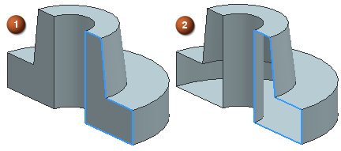

体类型
该选项位于建模首选项对话框的常规选项卡中。
指定通过特定命令(如拉伸、回转、通过曲线网格、通过曲线组、截面、缝合及直纹)创建的体的默认类型。
在下面的示例中，回转体的端部是平面。

-
 体类型设置为实体 — 将创建实体，因为输入数据在一个方向上封闭，并在另一个方向上是平面。
体类型设置为实体 — 将创建实体，因为输入数据在一个方向上封闭，并在另一个方向上是平面。 -
 体类型设置为片体 — 将在所有情况下都创建片体。
体类型设置为片体 — 将在所有情况下都创建片体。
|
注释 |
对于上述命令，体类型也可以在创建或编辑特征时，通过修改设置组中体类型选项来更改。 |